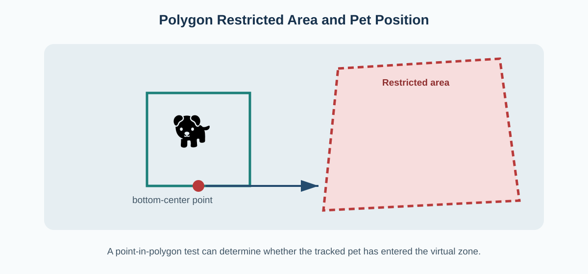

Restricted-Area Detection
YOLO does not automatically know that a kitchen, doorway, sofa, or part of a room is “restricted.” The application must define that spatial rule and then compare the tracked pet's position with the region.
1. Define the Restricted Area
A restricted area can be represented as a polygon in image coordinates. A general implementation may allow the user to click several points and create an arbitrary polygon. In my video demonstration, I use a simpler rectangular polygon so the region is easy to reproduce and explain.

Rectangle used in my notebook
Instead of hard-coding pixel values for one video resolution, my notebook defines the four boundaries as percentages of the frame.
ZONE_LEFT = 0.48
ZONE_TOP = 0.08
ZONE_RIGHT = 0.76
ZONE_BOTTOM = 0.99
restricted_polygon = np.array([
[int(width * ZONE_LEFT), int(height * ZONE_TOP)],
[int(width * ZONE_RIGHT), int(height * ZONE_TOP)],
[int(width * ZONE_RIGHT), int(height * ZONE_BOTTOM)],
[int(width * ZONE_LEFT), int(height * ZONE_BOTTOM)]
], dtype=np.int32)2. Detect and Track the Dog
My final demo uses YOLO for detection and ByteTrack to maintain the dog's identity across frames.
result = model.track(
frame,
persist=True,
tracker="bytetrack.yaml",
classes=[DOG_CLASS_ID],
conf=0.25,
verbose=False
)[0]Filtering to the dog class keeps the demonstration focused on pet monitoring instead of tracking every COCO object in the scene.
3. Represent the Dog's Position
A bounding box covers the dog's entire body. For a region drawn on the floor, I use the bottom-center of the box as a simple estimate of the dog's ground position.
x1, y1, x2, y2 = map(int, box)
pet_point = (
int((x1 + x2) / 2),
int(y2)
)4. Point-in-Polygon Test
OpenCV's point-in-polygon test checks whether the dog's representative point is inside, outside, or on the boundary of the polygon.
zone_test = cv2.pointPolygonTest(
restricted_polygon,
pet_point,
False
)
inside = zone_test >= 0If inside is true, the same tracked dog has entered the restricted region.
5. Existing Implementation: Ultralytics RegionCounter
An existing implementation related to this idea is Ultralytics RegionCounter. It combines object detection, object tracking, and user-defined regions. This is useful as a reference implementation because it shows that zone reasoning is a layer built on top of detection and tracking rather than a special “restricted area” object class.
Existing implementation reference: Ultralytics Region Counting Documentation
6. My Extension: Dwell Time
A single-frame zone crossing may be too brief to matter. My implementation therefore records the time when each tracked dog enters the region and measures how long that same track remains inside.
if inside:
if track_id not in entered_at:
entered_at[track_id] = current_video_time
dwell_time = (
current_video_time
- entered_at[track_id]
)
else:
entered_at.pop(track_id, None)
dwell_time = 0.0The demo triggers an alert only after the dog has remained inside for two seconds:
ALERT_AFTER_SECONDS = 2.0
if inside and dwell_time >= ALERT_AFTER_SECONDS:
show_alert()7. My Video Demonstration
The following demonstration connects the complete pipeline: YOLO detection → ByteTrack ID → restricted rectangle → bottom-center test → dwell time → alert.
Demo created for this tutorial. The dog is tracked across frames, the red rectangle represents the restricted area, and an alert can be shown after the dwell-time threshold.
1. Detect
YOLO finds the dog in each frame.
2. Track
ByteTrack maintains the Dog ID across frames.
3. Check
The dog's bottom-center point is tested against the restricted polygon.
4. Alert
The system measures dwell time and displays an alert after the threshold.
Download the Jupyter Notebook Used for the Demo
8. Limitations of the Demo
- The camera should remain fixed after the restricted region is defined.
- Occlusion can cause the dog detector or tracker to lose the animal temporarily.
- The bottom-center point is only an approximation of the dog's position on the floor.
- A fixed two-second threshold may not be appropriate for every home or restricted area.
- Performance may change with lighting, camera angle, distance, and dog appearance.